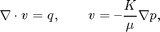
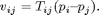
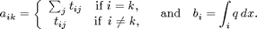
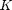
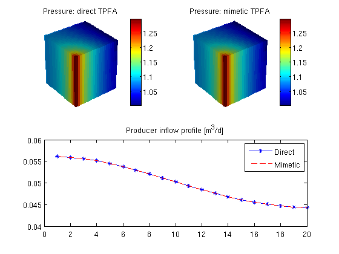

Two-Point Flux Approximation Solvers
Use the two-point flux approximation (TPFA) method to solve the single-phase pressure equation

for a Cartesian grid with isotropic, homogeneous permeability and two wells. The problem solved in this example is the same as in the tutorial "Using Peacemann Well Models", and more a detailed description of the model setup is shown there.
The main idea of the TPFA method is to approximate the flux v over a face by the difference of the cell centered pressures in the neighboring cells weigthed by a face transmissibility T:

The pressure in each cell is approximated by solving a linear system Ap = b. When ignoring wells, sources, and bc, A and b are given by

Once the pressure is known, the flux is calculated using the expression given above.
In this example we show two different ways of building and solving a TPFA system. First we show the direct/classic approach using transmissibilities, while in the second approach we view the TPFA-method as a mimetic inner product and use the mimetic framework.
The grid and the wells will be the same for both approaches.
Contents
Define and process geometry
Construct a Cartesian grid of size 10-by-10-by-4 cells, where each cell has dimension 1-by-1-by-1. Because our flow solvers are applicable for general unstructured grids, the Cartesian grid is here represented using an unstructured formate in which cells, faces, nodes, etc. are given explicitly.
nx = 20; ny = 20; nz = 5;
G = cartGrid([nx, ny, nz]);
G = computeGeometry(G, 'Verbose', true);
Computing normals, areas, and centroids... Elapsed time is 0.006808 seconds. Computing cell volumes and centroids... Elapsed time is 0.158935 seconds.
Set rock and fluid data
The only parameters in the single-phase pressure equation are the permeability , which here is homogeneous, isotropic and equal 100 mD. The fluid has density 1000 kg/m^3 and viscosity 1 cP.
rock.perm = repmat(100 * milli*darcy, [G.cells.num, 1]); fluid = initSingleFluid('mu' , 1*centi*poise , ... 'rho', 1014*kilogram/meter^3); gravity off
Introduce wells
We will include two wells, one rate-controlled vertical well and one horizontal well controlled by bottom-hole pressure. Wells are described using a Peacemann model, giving an extra set of equations that need to be assembled. We need to specify ('InnerProduct', 'ip_tpf') to get the correct well model for TPFA.
The first well is vertical well (vertical is default):
- completion in cells: cellsWell1
- controlled by production rate = 1.0 [m^3/d]
- radius = 0.1. [m]
cellsWell1 = 1 : nx*ny : nx*ny*nz; radius = .1; W = addWell([], G, rock, cellsWell1, ... 'Type', 'rate', 'Val', 1.0/day(), ... 'Radius', radius, 'InnerProduct', 'ip_tpf', 'Comp_i', [1, 0]);
The second well is horizontal in the 'y' direction:
- completion in cells: cellsWell2
- controlled by bottom hole pressure, bhp = 1e5 [Pa]
- radius = 0.1 [m]
cellsWell2 = nx : ny : nx*ny; W = addWell(W, G, rock, cellsWell2, ... 'Type', 'bhp' , 'Val', 1*barsa(), ... 'Radius', radius, 'Dir', 'y', 'InnerProduct', 'ip_tpf', ... 'Comp_i', [0, 1]);
APPROACH 1: Direct/Classic TPFA
Initialize solution structure with reservoir pressure equal 0. Compute one-sided transmissibilities for each face of the grid from input grid and rock properties. The harmonic averages of ones-sided transmissibilities are computed in the solver incompTPFA.
T = computeTrans(G, rock, 'Verbose', true);
Computing one-sided transmissibilities... Elapsed time is 0.001842 seconds.
Initialize well solution structure (with correct bhp). No need to assemble well system (wells are added to the linear system inside the incompTPFA-solver).
resSol1 = initState(G, W, 0, [1, 0]); % Solve linear system construced from T and W to obtain solution for flow % and pressure in the reservoir and the wells. Notice that the TPFA solver % is different from the one used for mimetic systems. resSol1 = incompTPFA(resSol1, G, T, fluid, 'wells', W, 'Verbose', true);
Setting up linear system... Elapsed time is 0.003991 seconds. Solving linear system... Elapsed time is 0.004813 seconds. Computing fluxes, face pressures etc... Elapsed time is 0.001214 seconds.
APPROACH 2: Mimetic with TPFA-inner product
Initialize solution structure with reservoir pressure equal 0. Compute the mimetic inner product from input grid and rock properties.
IP = computeMimeticIP(G, rock, 'Verbose', true, ... 'InnerProduct', 'ip_tpf');
Using inner product: 'ip_tpf'. Computing cell inner products ... Elapsed time is 0.041102 seconds. Assembling global inner product matrix ... Elapsed time is 0.001929 seconds.
Generate the components of the mimetic linear system corresponding to the two wells and initialize the solution structure (with correct bhp)
resSol2 = initState(G, W, 0, [1, 0]);
Solve mimetic linear hybrid system
resSol2 = solveIncompFlow(resSol2, G, IP, fluid, 'wells', W);
Report results
Report pressure drop computed by the two solvers.
dP1 = convertTo(resSol1.wellSol(1).pressure - ... resSol1.wellSol(2).pressure, barsa); dP2 = convertTo(resSol2.wellSol(1).pressure - ... resSol2.wellSol(2).pressure, barsa); disp(['DeltaP, direct TPFA: ', num2str(dP1)]) disp(['DeltaP, mimetic TPFA: ', num2str(dP2)])
DeltaP, direct TPFA: 0.31098 DeltaP, mimetic TPFA: 0.31098
Plot the pressure and producer inflow profile
clf subplot(2,2,1) plotCellData(G, convertTo(resSol1.pressure, barsa)); title('Pressure: direct TPFA') view(3), camproj perspective, axis tight off, camlight headlight colorbar; cax = caxis; subplot(2,2,2) plotCellData(G, convertTo(resSol2.pressure, barsa)); title('Pressure: mimetic TPFA') view(3), camproj perspective, axis tight off, camlight headlight colorbar; caxis(cax); subplot(2,2,3:4) wflux = -[reshape(resSol1.wellSol(2).flux, [], 1), ... reshape(resSol2.wellSol(2).flux, [], 1)]; plot(convertTo(wflux(:,1), meter^3/day), 'b-*'); hold on plot(convertTo(wflux(:,2), meter^3/day), 'r--'); legend('Direct','Mimetic') title('Producer inflow profile [m^3/d]');